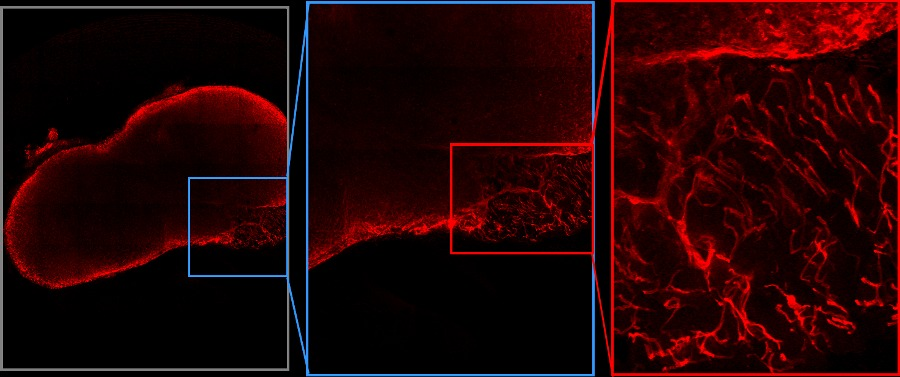
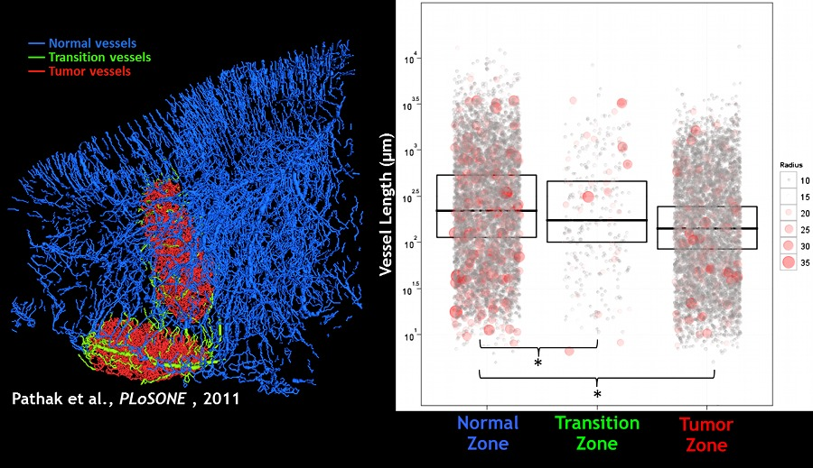
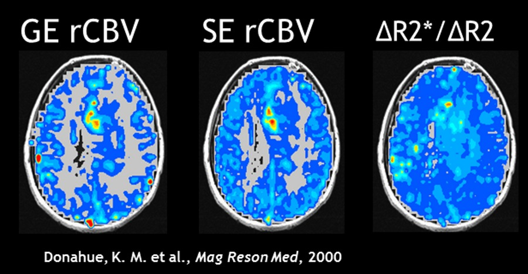
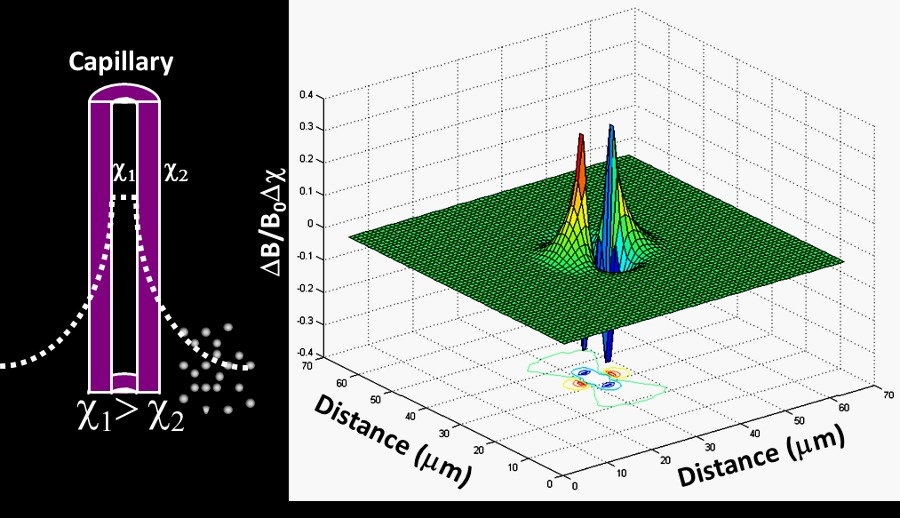

Contrast Mechanisms

If we develop a clear understanding of the relationship between the final biomedical image and the underlying pathophysiology,
we can create new ways of imaging disease. Such developments can profoundly affect patient outcome and better inform disease management.
Therefore, in the Pathak Lab, we are trying to undertsand the relationship between tumor biology and image contrast in Magnetic Resonance Imaging (MRI).
Our goal is to develop clinical ‘readouts’ i.e. pictures of the tumor in which the colors/instensity or ‘contrast’ is a function of the underlying status of the tumor.
Multiscale Imaging

When you use Google Maps, you can zoom in from a bird’s eye view of the world, all the way down to the street that you live on.
You can determine which country abuts your’s and after zooming you can tell which park is nearest to home. In other words, there
is important information at each spatial level. Similarly, in biomedical images, there is information at different spatial scales.
In the Pathak Lab we are attempting to integrate information from different imaging methods and spatial scales to develop a
‘Google Map’ of certain types of cancer. We believe this would give us a better understanding of cancer biology and help develop methods to combat it.
Data Visualization

They say a “picture is worth a 1000 words”. In the Pathak Lab we are trying to make a picture worth 100,000 words or more! To extract
and communicate information from the rich, multidimensional biomedical images we acquire it is necessary to incorporate techniques
ranging from information theory, computer graphics to statisitics and aesthetics. We collaborate with amazing colleagues from the
departments of computer science, radiology and biomedical engineering to achieve this integration. Examples of scientific data
visualization can be found in several of our papers from 2011.
Clinical Biomarkers

It is our hope that all the projects in the lab culminate in two major ways: the first, is a better understanding of brain and
breast cancer, and the second is the development of imaging methods that facilitate a physician’s prognosis. Just as one undergoes
a blood test to identify pathogens, undergoing ‘imaging tests’ can provide ‘biomarkers’ to inform the physician’s prognosis.
To do this, one needs a detailed understanding of cancer and the engineering principles underlying image formation. In the Pathak
Lab we employ biomedical engineering approaches to straddle these disciplines. We hope that addressing these issues will profoundly
affect patient outcome and disease management.
Biophysical Modeling

To develop imaging ‘biomarkers’ of cancer and relate the contrast mechanism to the underlying tumor microenvironment, we employ
computational tools that allow us to simulate the MRI signal. These tools are at the interface of mathematics and biophysics and
help us gain a better understanding of how various parameters such as magnetic field strength, contrast agent type and dose can affect
the eventual MRI signal. These tools will help us identify the window within which the most ‘sensitive’ tumor biomarkers can be imaged.

{kind=link}
{kind=link}
{kind=link}
{kind=link}